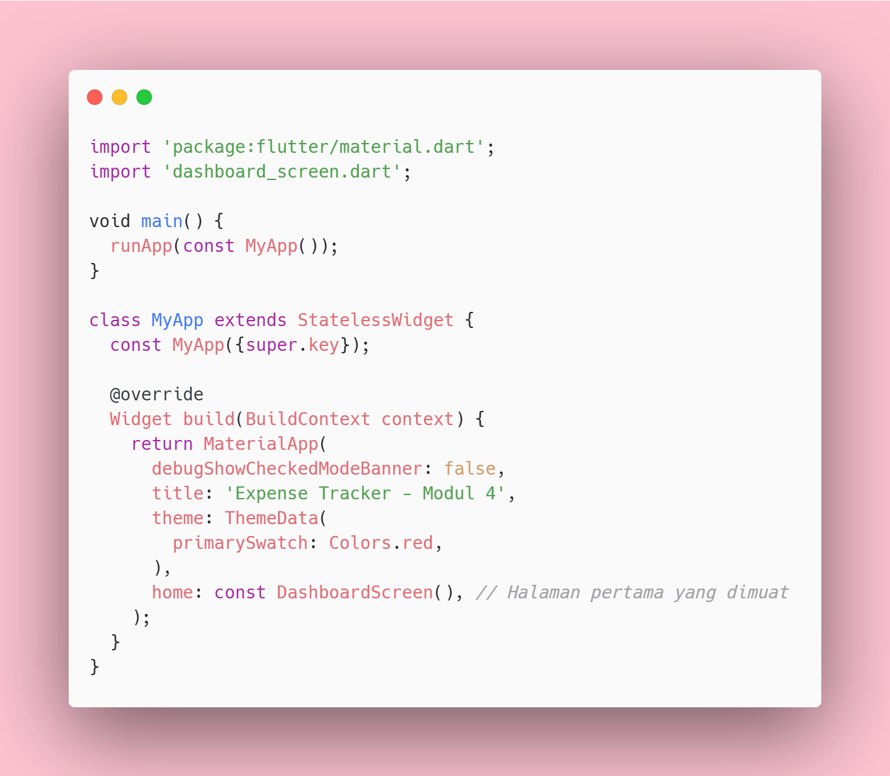
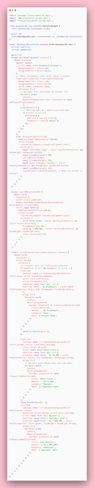
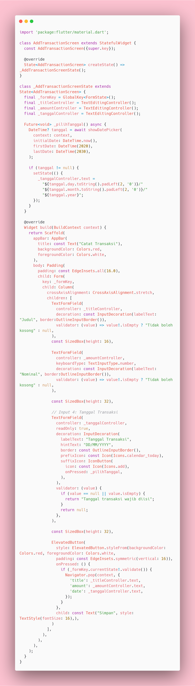
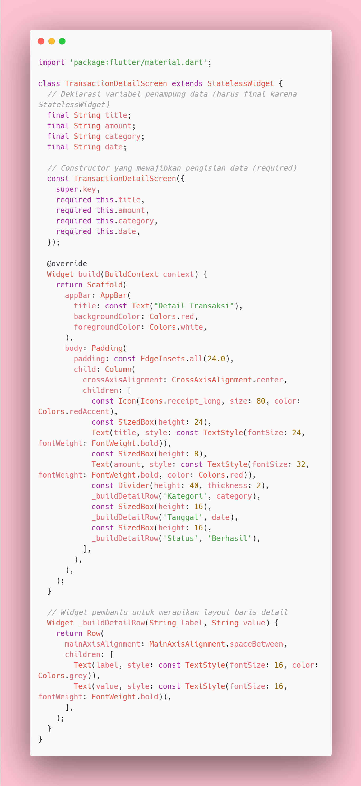
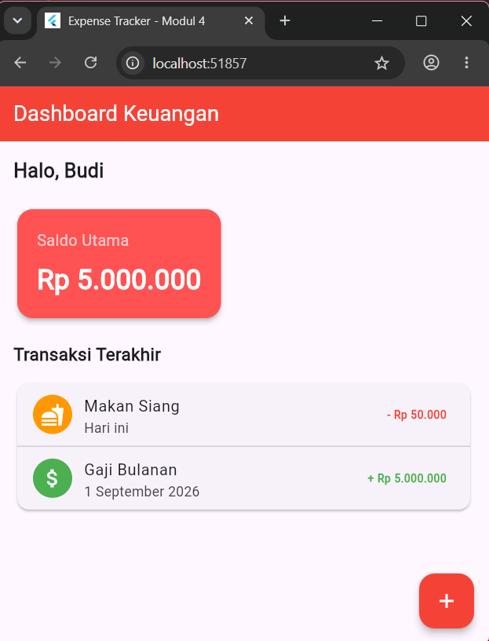
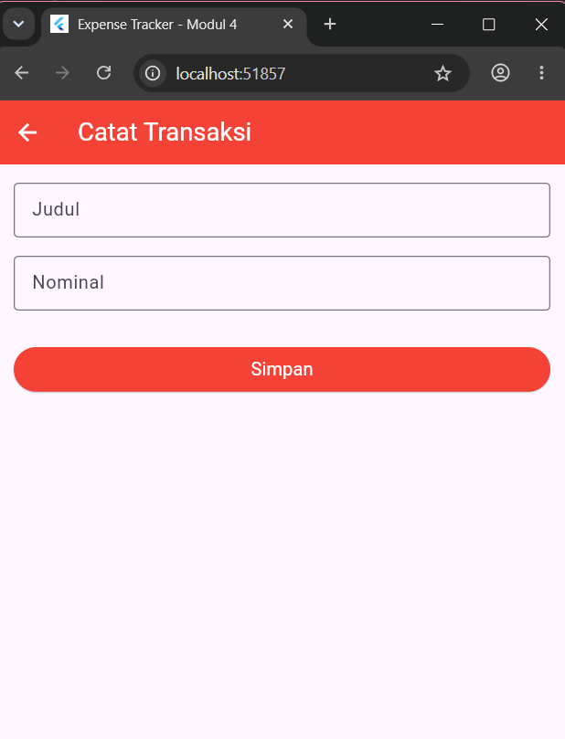
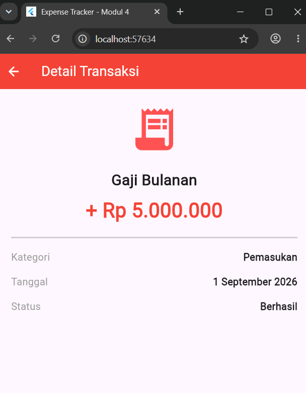
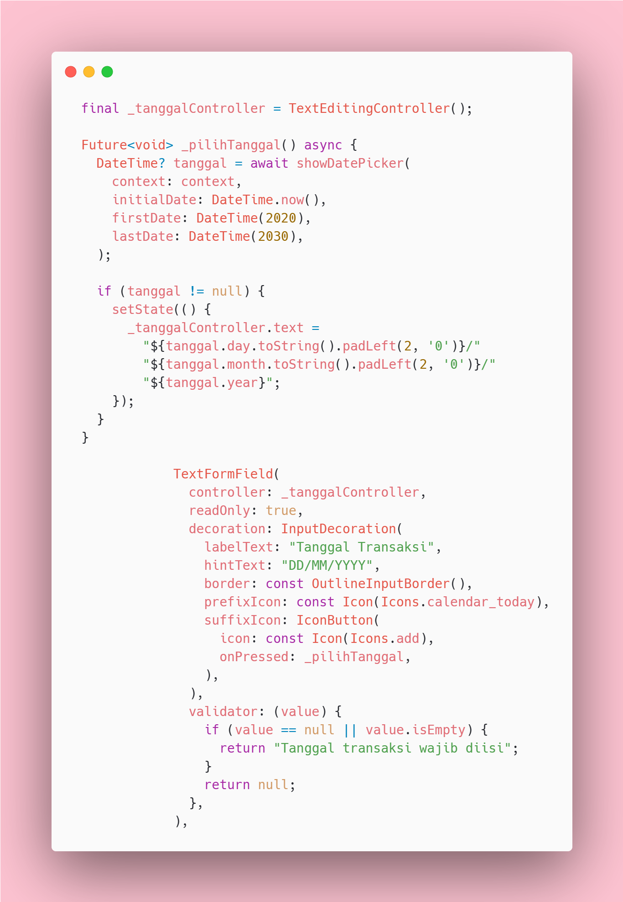
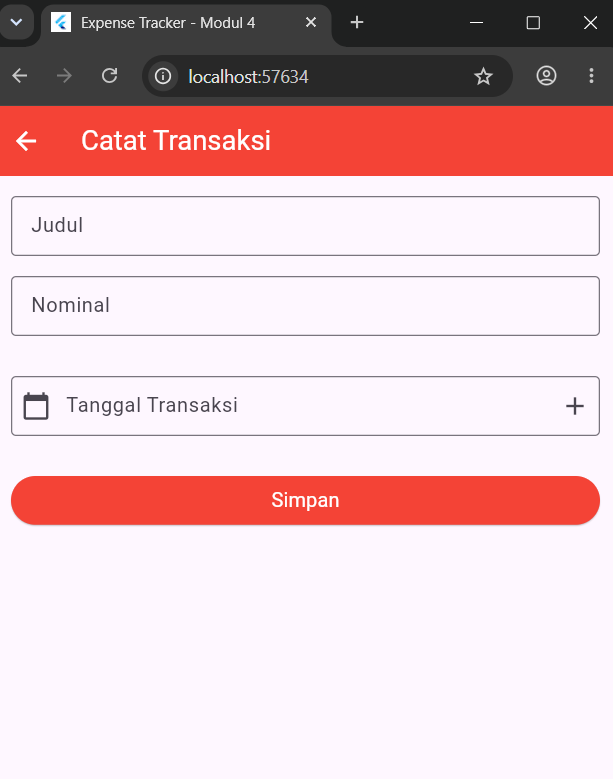

Navigasi & Passing Data
Praktikum ini membahas penggunaan dasar navigasi halaman pada aplikasi Flutter menggunakan Navigator dengan konsep tumpukan (stack). Materi meliputi penggunaan fungsi push untuk berpindah ke halaman baru dan pop untuk kembali ke halaman sebelumnya. Selain itu, praktikum membahas penggunaan constructor dan passing data antar halaman dengan variabel final serta keyword required. Konsep tersebut diterapkan pada pembuatan aplikasi sederhana yang dapat melakukan perpindahan halaman sekaligus mengirimkan data dari satu halaman ke halaman lainnya.
Menerapkan Navigator.push untuk berpindah ke halaman baru dan Navigator.pop untuk
kembali atau menutup halaman yang sedang dibuka.
Menerapkan pengiriman data seperti String dan int antarhalaman menggunakan
Constructor.
Menyusun konfigurasi aplikasi pada main.dart untuk mengatur tema warna aplikasi menjadi merah serta menentukan DashboardScreen sebagai halaman utama yang pertama kali ditampilkan.

Buat file dashboard_screen.dart pada folder lib sebagai halaman utama aplikasi yang menampilkan saldo dan daftar transaksi.

Halaman DashboardScreen digunakan untuk menampilkan saldo utama, daftar transaksi terakhir,
serta tombol tambah transaksi. Tombol tambah digunakan untuk berpindah ke halaman AddTransactionScreen
menggunakan Navigator.push. Data transaksi yang telah disimpan kemudian diterima kembali dan
ditampilkan pada Dashboard. Setiap transaksi juga dapat diklik untuk berpindah ke halaman TransactionDetailScreen
dengan membawa data transaksi.
Buat file add_transaction_screen.dart pada folder lib sebagai halaman untuk mencatat transaksi baru.

Halaman AddTransactionScreen digunakan untuk menampilkan form input judul dan nominal yang dilengkapi dengan
validasi. Tombol Simpan digunakan untuk memvalidasi form dan mengirim data transaksi kembali ke halaman Dashboard menggunakan
Navigator.pop.
Buat file transaction_detail_screen.dart pada folder lib sebagai halaman untuk menampilkan detail transaksi yang dipilih.

Halaman TransactionDetailScreen digunakan untuk menerima data transaksi seperti judul, nominal, kategori, dan tanggal melalui
Constructor dengan required. Data tersebut kemudian ditampilkan pada halaman detail, sehingga
informasi transaksi yang dipilih dari Dashboard dapat ditampilkan secara lengkap.
Saat aplikasi dijalankan, DashboardScreen menjadi halaman utama yang menampilkan saldo utama dan daftar transaksi terakhir. Pada halaman ini terdapat tombol + untuk menambahkan transaksi baru.

Tombol + pada Dashboard ditekan untuk berpindah ke AddTransactionScreen. Halaman ini digunakan untuk mengisi judul dan nominal transaksi, kemudian data dapat disimpan menggunakan tombol Simpan.

Setelah kembali ke Dashboard, transaksi yang telah ditambahkan dapat ditekan untuk berpindah ke TransactionDetailScreen. Halaman ini menampilkan detail transaksi berupa judul, nominal, kategori, dan tanggal.

Tambahkan satu input baru sebelum tombol Simpan untuk mengisi tanggal transaksi. Dapat menggunakan TektFormField biasa atau showDatePicker.


Pada praktikum ini, aplikasi Expense Tracker dikembangkan dengan menerapkan konsep navigasi antarhalaman
menggunakan Navigator.push dan Navigator.pop. Aplikasi memiliki tiga halaman utama, yaitu
DashboardScreen sebagai halaman utama, AddTransactionScreen untuk menambahkan transaksi,
dan TransactionDetailScreen untuk menampilkan detail transaksi. Selain itu, diterapkan juga konsep
passing data melalui Constructor serta validasi form dan pemilihan tanggal menggunakan showDatePicker.
Dengan penerapan tersebut, pengguna dapat berpindah antarhalaman dan mengirimkan data transaksi sesuai kebutuhan aplikasi.
Kode project dapat diakses melalui repository Github berikut.
Buka Github